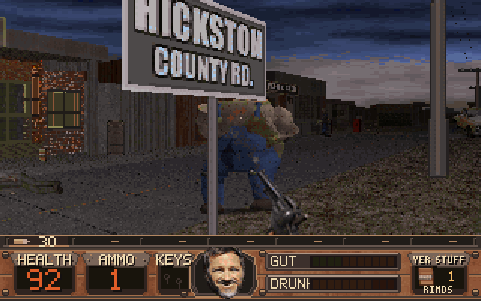
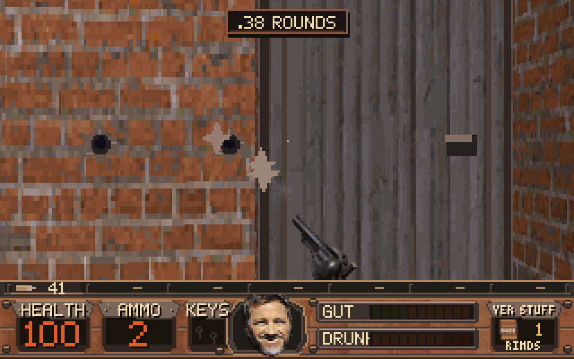
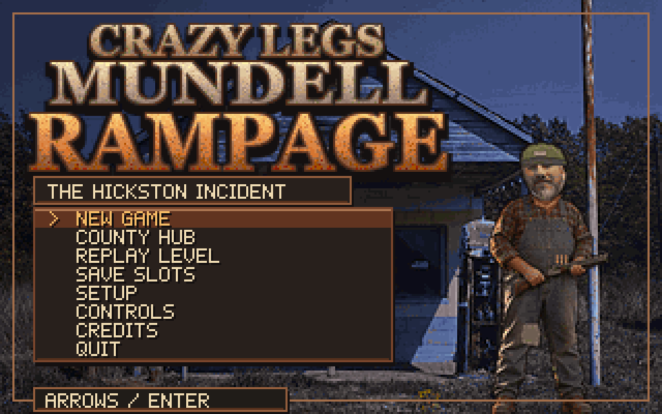
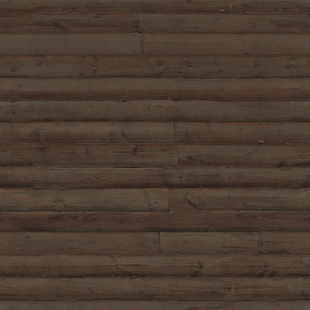
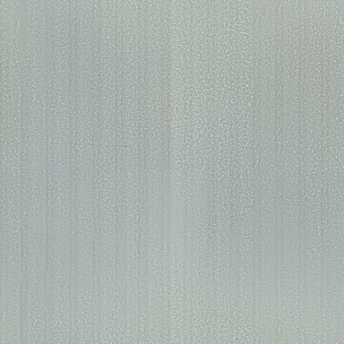
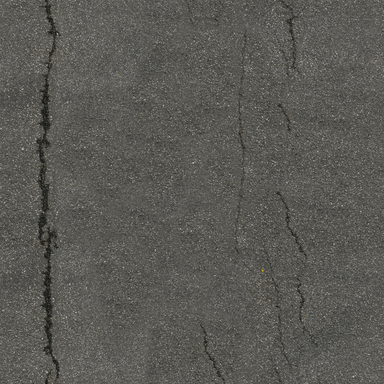

The Hickston Incident
Pictures
Stills from the source build. Moving footage is not on the site.
On the road
Stills only. Moving footage is not on the site.





How these pictures were made
Stills from the published v1.4.3 Linux source, scaled 3× nearest-neighbor from the 320×200 canvas. They are not a recording of the Windows EXE and not a person playing. Moving footage is not on the site.
Production material textures
Three CC0 scans from Poly Haven. They do not show what a level looks like in play.

Material texture
Weathered plank siding. Used in game asset production. Not a gameplay screenshot.
Poly Haven, CC0.

Material texture
Corrugated iron. Used in game asset production. Not a gameplay screenshot.
Poly Haven, CC0.

Material texture
Asphalt. Used in game asset production. Not a gameplay screenshot.
Poly Haven, CC0.
Site graphics
The roadside sign, route colors, and crossroads diagram are layout art made for this website. They are not captures from the game.